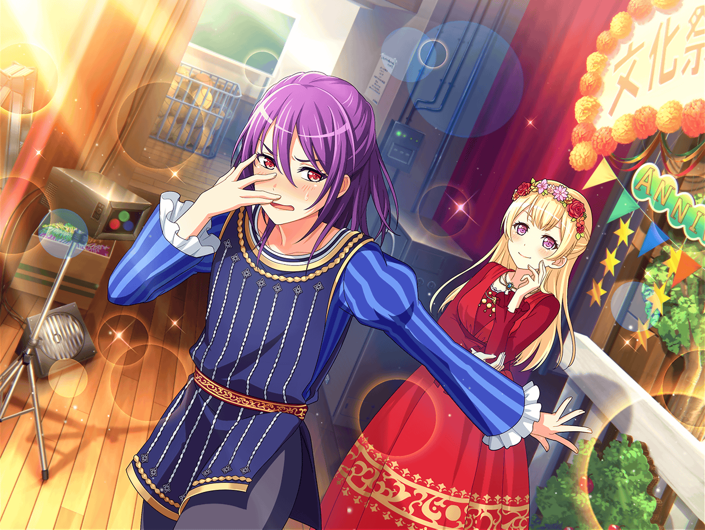

演劇部部室
部長
……では、客演には白鷺千聖さんを
呼ぶということで異議ないですね？
部員一同
異議ありません！
部員B
部長！ 上演作品は何にしますか？
やる作品次第で、出演の有無を考えてくれるかもしれませんよ
部長
確かに一理あるわね……
薫さん、麻弥さん
麻弥
はい！
部長
２人に上演作品を考えてもらえないかな？
麻弥
えっ！？ いいんですか、ジブン達２人で決めてしまって
部長
白鷺千聖さんのことをよく知っている２人なら、
彼女にあう作品もわかると思うの
部長
部員達があれこれ意見を出し合うより、
彼女をわかってる２人が考えたほうがいいんじゃないかと思って
薫
なるほど。そういうことなら任せてくれ。
私と千聖はずいぶん長い付き合いだからね
麻弥
わかりました！ 薫さん、いい作品見つけましょうっ！
部長
ありがとう。では、作品を決めたら教えてください。
それでは今日は解散。お疲れ様でした
部員一同
お疲れ様でした！
薫
ああ……こんなにも文化祭が待ち遠しいのは
はじめてだ！ 今すぐ当日になってほしいよ！
麻弥
気持ちはわかりますけど、まずは上演する作品を決めないと！
文化祭で上演する作品は、定番の古典作品を
やるのが常でしたけど、今年はどうしましょう？
薫
古典作品を上演するのは演劇部の伝統だ。
伝統は守りつつ、よりいいものを作るのがいいのではないかな？
麻弥
おお……薫さんがまともだ……。
それじゃあ、さっそく部室にある台本から選んでいきましょうか
麻弥
それにしても……本当にジブン達だけで作品を
選んでしまって大丈夫なんでしょうか？
薫
千聖をよく知る人物として任されたんだ、
自信を持とうじゃないか
麻弥
薫さん……今日はまともですね？
えと、それじゃあ千聖さんに合いそうな作品を
探してみましょうか
薫
そうだなあ……千聖に合いそうなもの……
どんなものがいいだろう
麻弥
千聖さんといえば……清楚でかわいらしくて……
麻弥
まじめで、上品で……それから、影でまわりを支える
縁の下の力持ち的な一面もあったりしますよね
麻弥
う〜ん、千聖さんのどんな一面を押しだしていけばいいんだろう。
悩みますね〜。薫さんの中の千聖さんのイメージって
どういうものですか？
薫
そうだね……私の中の千聖は、一言で言うと『儚い』…‥かな
麻弥
うわあ、出たあ〜！ もう、それじゃわからないですって
１年以上言い続けてるじゃないですか〜！
薫
そう言われてもなあ……。
フフ、もう少し私を理解してほしいね、麻弥
麻弥
これでもだいぶ理解したつもりなんですけど……
それじゃあ、もう少し具体的な質問に。
千聖さんに合う作品はなんだと思いますか？
薫
それはもちろんはかな……
麻弥
『儚い』は禁止でお願いします！
薫
ふうむ……それじゃあ『ロミオとジュリエット』はどうだろう？
薫
ジュリエットの奔放でありながら、芯の強いところは
彼女にピッタリだと思うよ
麻弥
奔放、ですかあ……少し意外な選択理由ですね！
薫
そうかい？
麻弥
はい。ジブンは千聖さんを奔放な人とは思ったことがなかったので
麻弥
ふむふむ、薫さんから見る千聖さんってそういう方なんですね〜。
ジブンはPastel＊Palettesの千聖さんしか
知らないので、新鮮です
薫
それもまた千聖さ
麻弥
きっと、長年千聖さんを知っている薫さんしか
知らない千聖さんっていうのがいるんでしょうね。いいなあ
薫
さて私は、さっそく千聖に声をかけてみるとしよう
麻弥
千聖さん、受けてくれますかね？
薫
ああ、もちろん！ きっと快くOKしてくれるはずさ。
善は急げという。これから千聖に電話してくるよ。
千聖のことは私に任せてくれ
麻弥
はい！ それじゃあジブンは上演作品が決まったことを
部員に報告しておきますね！
麻弥
千聖さんのジュリエットかあ、たのしみだな〜！
薫
ああ、千聖、やっと私からの電話に出てくれたね。
もしかして、仕事が忙しかったのかな？
薫
え？ そういうわけではない？
フフ……まったく、つれないね。
君のそんな奔放なところには……
薫
……もしもし？ もしもし？
……切れてしまった
薫
フフ……本当に奔放なお姫様だ……
薫
……ふ、フフ……